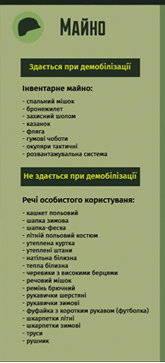
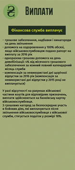

Важливо знати при демобілізації:
Документи, які послужать підставою для надання особам статусу УБД перелічені у п. 4 Порядку № 413. Зверніть увагу: вони залежать від форми участі в АТО – була фізособа там в силу служби у ЗСУ, інших військових чи правоохоронних формуваннях, або ж працювала на забезпечення проведення АТО безпосередньо в районах останньої.
 Для військовослужбовців (резервістів, військовозобов'язаних) і працівників ЗСУ та інших військових формувань, осіб рядового і начальницького складу, військовослужбовців, працівників правоохоронних та спеціальних органів це будуть документи щодо безпосереднього залучення таких осіб до виконання завдань АТО в районах її проведення. Йдеться про витяги з наказів, директив, розпоряджень, посвідчень про відрядження, журналів бойових дій, бойових донесень, дислокацій, книг нарядів, графіків несення служби, звітів, зведень, донесень, оперативних завдань, матеріалів спеціальних (службових) розслідувань за фактами отримання поранень.
Також підставою для статусу учасника бойових дій стануть інші офіційні документи, видані держорганами. Головне – щоб вони містили достатні докази про безпосередню участь особи у виконанні завдань АТО у районах її проведення.
Із 25.06.15 р. завдяки урядовій постанові № 425 підставою для надання особам статусу учасника бойових дій слугують документи про безпосереднє залучення до виконання завдань АТО в районах її проведення, направлення (прибуття) у відрядження до районів проведення операції, перебування в таких районах із метою виконання завдань із захисту незалежності, суверенітету та територіальної цілісності України шляхом безпосередньої участі в АТО, забезпеченні її проведення. Такими документами можуть бути витяги з:
- наказів керівника АТЦ про залучення до проведення АТО;
- директив, розпоряджень, посвідчень про відрядження, оперативних завдань;
- журналів бойових дій, бойових донесень, дислокацій, книг нарядів, графіків несення служби, звітів, зведень, донесень;
- матеріалів спеціальних (службових) розслідувань за фактами отримання поранень.
Також для надання вказаного статусу послугують інші офіційні документи, видані державними органами, що містять достатні докази про безпосередню участь особи у виконанні завдань АТО в районах її проведення.
До речі, згідно з п. 12 Положення № 200 (набрало чинності 22.05.15 р.) для надання статусу учасника бойових дій військовослужбовцям (резервістам, військовозобов'язаним) та працівникам ЗСУ, які брали безпосередню участь в АТО, за відсутності в заявника через незалежні від нього причини необхідних документів, дозволено брати до уваги показання свідків (не менше двох), які в період, що потребує підтвердження, проходили військову службу чи працювали разом із заявником.
Хто отримує статус учасника бойових дій за участь в АТО
Згідно з п. 19 ч. 1 ст. 6 Закону про ветеранів війни статус учасника бойових дій вправі отримати у зв’язку з участю в АТО військовослужбовці (резервісти, військовозобов'язані) та працівники ЗСУ, НГУ, СБУ, СЗР, ДПС, особи рядового, начальницького складу, військовослужбовці, працівники MBC, УДО, ДДССЗЗІ, інших утворених відповідно до законів України військових формувань. Ці особи набувають указаний статус за умови, що вони захищали незалежність, суверенітет та територіальну цілісність України і брали безпосередню участь в АТО, забезпеченні її проведення, перебуваючи безпосередньо в районах цієї операції.
Окрім того, статус учасника бойових дій вправі отримати працівники підприємств, установ, організацій. Підстава – їх залучали та вони брали безпосередню участь в АТО в районах її проведення у порядку, встановленому законодавством. Йдеться передусім про співробітників будівельних, рятувальних, транспортних, громадського харчування та інших підприємств, якщо відповідний роботодавець офіційно був залучений до здійснення АТО.
Із 19.06.15 р. завдяки Закону № 291 (коментар до нього читайте в газеті "Все про бухгалтерський облік" № 45 за 2015 р., стор. 15) змін зазнав п. 19 ч. 1 ст. 6 Закону про ветеранів війни. Тепер статус учасника бойових дій управі отримати у зв’язку з участю в АТО:
- військовослужбовці (резервісти, військовозобов'язані) та працівники ЗСУ, НГУ, СБУ, СЗР, ДПС, ДССТ;
- військовослужбовці військових прокуратур;
- особи рядового, начальницького складу, військовослужбовці, працівники МВС, УДО, ДССЗЗІ, ДСНС, ДПтС, інших утворених відповідно до законів України військових формувань.
 Умови для отримання цього статусу вказаним особам залишилися попередні: захист незалежності, суверенітету та територіальної цілісності України, безпосередня участь в АТО, забезпеченні її проведення, перебуваючи безпосередньо в районах цієї операції в період її проведення.
Також тепер на статус учасника бойових дій управі претендувати особи, які у складі добровольчих формувань, утворених або самоорганізованих для захисту незалежності, суверенітету та територіальної цілісності України, брали безпосередню участь в АТО, забезпеченні її проведення, перебуваючи безпосередньо в районах операції в період її проведення (п. 20 ч. 1 ст. 6 Закону про ветеранів війни). Для них цей статус стане реальністю за умови, що в подальшому такі добровольчі формування включили до складу ЗСУ, МВС, НГУ чи інших утворених відповідно до законів України військових формувань та правоохоронних органів.
Водночас Закон № 291 позбавив права отримати статус учасника бойових дій працівників юросіб, залучених до АТО. Тепер такі працівники вправі отримати статус учасника війни (п. 13 ст. 9 Закону про ветеранів війни).
Окрім того, Закон № 291 доповнив перелік осіб, яких визнають інвалідами війни, тими, хто став інвалідами внаслідок поранення, контузії або каліцтва, одержаних під час безпосередньої участі в АТО, забезпеченні її проведення, перебуваючи безпосередньо в районах операції в період її проведення. До їхнього числа належать (п.п. 11-14 ч. 2 ст. 7 Закону про ветеранів війни):
- військовослужбовці (резервісти, військовозобов'язані), працівники та інші особи, зазначені в п. 19 ч. 1 ст. 6 Закону про ветеранів війни;
- працівники юросіб, які залучалися до забезпечення проведення АТО;
- добровольці, названі в п. 20 ч. 1 ст. 6 Закону про ветеранів війни;
- добровольці з формувань, які не долучилися до ЗСУ чи інших військових формувань та правоохоронних органів, але виконували у взаємодії з ними завдання АТО;
- особи, які добровільно забезпечували (або добровільно залучалися до забезпечення) проведення АТО.
До того ж право отримати статус інваліда війни мають також учасники АТО серед уже зазначених осіб (окрім останньої категорії, тобто волонтерів), яких визнано інвалідами до 19.06.15 р.
Центри допомоги учасникам АТО створені для допомоги демобілізованим учасникам АТО.
- Вінниця
Вінницький ЦДУ АТО
тел. (0432) 67-17-26 - Дніпропетровськ
Дніпропетровський ЦДУ АТО тел. (056) 742 86 62,
(068) 679 89 61,
0 800 505 085 - Волинський
Волинський ЦДУ АТО
тел. +38 066 613 30 28 - м. Краматорськ Донецької обл
ЦДУ АТО у м. Краматорськ Донецької обл.
тел. +38 066 809 98 48,
+38 073 424 14 82 ,
+38 096 119 65 66 - Житомир
Житомирський ЦДУ АТО
тел. (0412) 47-50-06,
(0412) 47-50-08 - Закарпаття
Закарпатський ЦДУ АТО
тел. (0312) 61-74-76,
(0312) 61-54-05 - Запоріжжя
Запорізький ЦДУ АТО
тел. +38 (0612) 362525,
+380500700406 - Івано-Франківськ
Ивано-Франківський ЦДУ АТО
тел. +38 066 465 03 67,
+38 068 453 88 28 ,
+38 093 255 18 82,
(0342) 55 22 99 - Київ
ЦДУ АТО в Київській обл.
тел. 0 800 213 015 - Кіровоград
Кіровоградський ЦДУ АТО
тел. +38 050 029 82 22,
+38 098 029 82 22 - м. Сіверодонецьк Луганської обл.
ЦДУ АТО у м. Сіверодонецьк Луганської обл.
тел. +38 097 070 52 25 - Львів
Львівський ЦДУ АТО
тел. +38 032 255 42 96 - Миколаїв
Миколаївський ЦДУ АТО
тел. (0512) 37 02 22,
+ 093 355 44 08,
+38 097 618 96 16 - Одесса
Одеський ЦДУ АТО
тел. (0482) 39 00 04,
(0482) 39 00 05 - Полтава
Полтавський ЦДУ АТО
тел. +38 066 992 14 74,
+38 097 193 47 34 - Рівне
Рівненський ЦДУ АТО
тел. +38 050 663 60 90 ,
+38 068 850 40 10 - Сумми
Сумський ЦДУ АТО
тел. +38 095 038 32 82,
+38 097 665 91 31,
+38 093 829 19 99 - Тернопіль
Тернопільський ЦДУ АТО
тел. +38 098 596 26 80,
+38 067 381 44 99,
+38 097 205 50 55 - Харків
Харківський ЦДУ АТО
тел. (57) 712 46 27 - Херсон
Херсонський ЦДУ АТО
тел. (0552) 45-52-80 - Хмельницьк
Хмельницький ЦДУ АТО
тел. (0382) 65-90-70,
+38 067 380 50 65 - Черкаси
Черкаський ЦДУ АТО
тел. 0800 508 876 - Чернигів
Чернигівський ЦДУ АТО
тел. +38 093 343 23 32,
+38 067 464 35 53,
+38 050 493 43 53 - Чернівці
Чернівецький ЦДУ АТО
тел. (0372)4-66-69